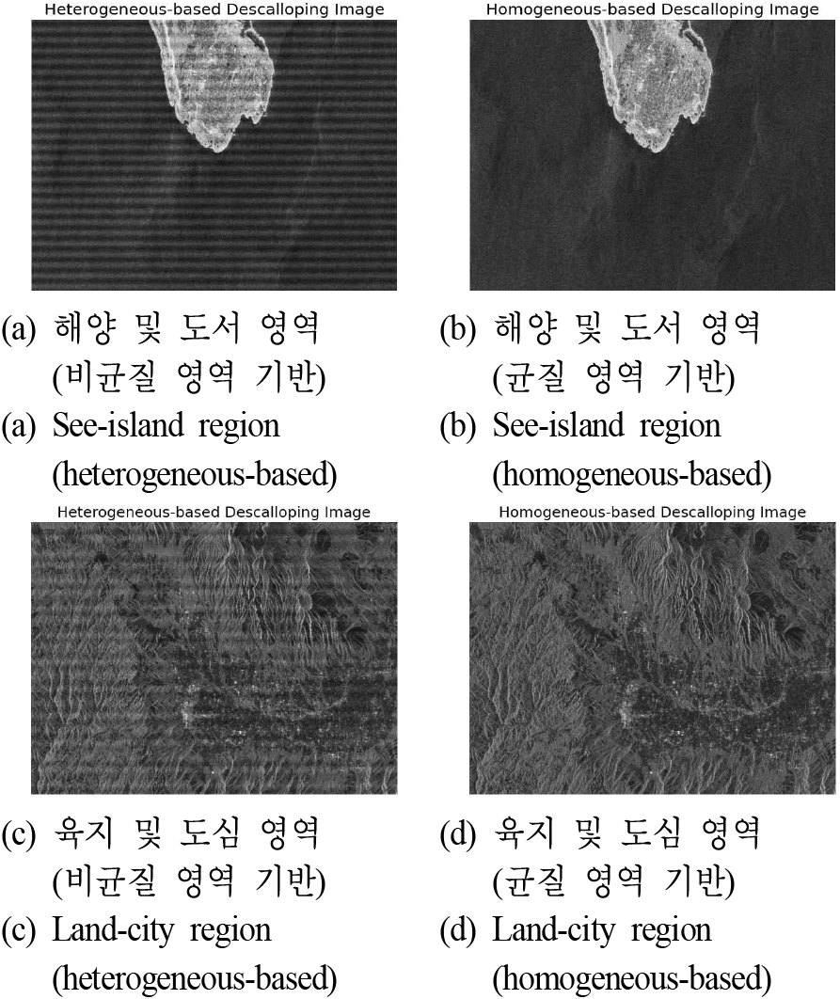

연구 과제
TOPS 기술을 통한 품질향상 분석

주요 내용·성과
- 위성 TOPS SAR 모드 시스템 모델링 및 성능 평가 — 스캔 모드 대비 스캘러핑 미발생 확인 (한국위성정보통신학회논문지 9(2), 2014, pp. 74–79)
- 사사 원문: "본 연구는 미래창조과학부에서 시행한 다목적실용위성6호 개발사업의 지원으로 수행하였음."
- 후속 과제 「광역감시 위성 SAR를 위한 신호 처리 기술 연구」(2017), 「광역 고해상도 위성 SAR를 위한 다중 파형 시스템」(2018, 항공우주연구원) 등 광역 관측 모드 연구로 이어짐
관련 논문·발표
- "TOPS 위성 SAR 모드 시스템 구현 및 성능 평가 연구" (2014)
- SPECAN 알고리즘을 이용한 RADARSAT-1 ScanSAR quick-look 신호 처리 및 검증 알고리즘 구현 (2010)